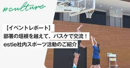
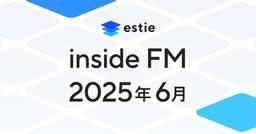
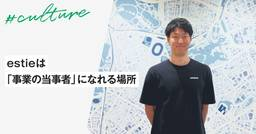

estie inside blog
https://www.estie.jp/blog/
estie inside blog
フィード

【イベントレポート】部署の垣根を越えて、バスケで交流！ estie社内スポーツ活動のご紹介
estie inside blog
こんにちは。今回は、社内の有志メンバーで開催されたバスケットボールの部活動についてレポートをお届けします！ きっかけは「やってみませんか？」という一声から 今回のバスケ部の活動は、2週間に1度バスケットボールを続けていて、普段マーケティング・ISのマネージャーをしている志水美月さんの「一緒にやってみませんか？」という声かけをきっかけに開催されました。 参加者を募ったところ、部活動未経験のメンバーやバスケ初心者も含めて、部署や職種を問わず約15名と多くのメンバーが集結。 「身体を動かしたい」「チームでワイワイ楽しみたい」という気持ちが自然に広がり、スポーツを通じた社内交流の場が実現しました。 経…
1日前

【estie inside FM】2025年6月公開エピソードまとめ
estie inside blog
株式会社estieが送るポッドキャスト番組「estie inside FM」。2025年1月から開始し、毎週金曜日に新しいエピソードをお届けしています。 各回のエピソードには、ユニークなゲストを迎え、estieの取り組みや個性的なメンバー、そして不動産業界のトレンドについてお届けしております。 今回は、2025年6月に更新した、4つのエピソードをご紹介します！まだ聴いていなかったエピソードや、気になるエピソードがあれば、ぜひご一聴ください。 21 「新卒は環境が全て」 な理由 / esite取締役が今新卒就活をするならどう選ぶ？【取締役 束原 × HR 小酒井】 第21回目のエピソードでは、e…
2日前

estieは「事業の当事者」になれる場所
estie inside blog
こんにちは。estieでエンジアリングマネージャーをしているhishikiです。 私がestieに入社してから、今年の8月で3年になります。 入社して間もない頃に書いたエントリを読み返してみると、「来年自分が何をやっているのかは想像ができません」と書いていました。正直なところ、現在の私も同じ気持ちです（笑）。 この3年間で、「既存事業のグロース」から「新規事業の立ち上げ」まで、私の役割は目まぐるしく変化してきました。こうした環境で私が何を感じ、どう動いてきたのか。そして、estieという会社がどんな場所なのか。素直な気持ちでお話できればと思います。 3つのプロダクトで駆け抜けた日々 入社の経緯…
4日前

生成AIと学ぶクエリチューニング
estie inside blog
こんにちは、estieでSWEをしている上久保です。突然ですが皆さんはプロダクトのパフォーマンス改善に取り組んだことはありますか。プロダクトは機能追加やデータ拡充などによってパフォーマンスが悪化する場合があり、時としてUXの低下を招いたり、障害につながることもあります。 最近ではソフトウェア開発における生成AIの活用が当たり前になってきていますが、その影響でボトルネックの特定やチューニングといったソフトウェアのパフォーマンス改善の取り組みに関しても、以前より敷居が下がっていると感じています。例えば私はソフトウェアエンジニアとして一定レベルのSQLは実装できますが、MySQLのオプティマイザの仕…
9日前
5年目の在職エントリ（丸島: ソフトウェアエンジニア）
estie inside blog
こんにちは。estieでエンジニアをしている丸島です。 カジュアル面談などで候補者の方とお話しする機会が増え、自身の経歴やestieで何をしているのかについてお話しすることが多くなったなあと思っています。せっかくなのでその内容を一度整理し、estieという会社やそこでの働き方についてお伝えするため、本記事を書こうと思った次第です。よろしければお付き合いください。 辞めるつもりのなかった前職時代 estieとの出会いは知人からの紹介でした。前職在籍中にestieで副業を始め、かなり早い段階から「正社員にならない？」と誘われていたのですが、当時の私は転職を積極的に考えていたわけではなかったので、の…
10日前
チームで顧客に向き合い、事業を育てる ── estieのCSが担う役割
estie inside blog
estieのカスタマーサクセスチームは、導入支援にとどまらず、お客様の変化に寄り添いながら、日々新たなチャレンジをしています。そんなカスタマーサクセス(以下CS)の現場から、寺境さんと永坂さんの日々の取り組みや、仕事の難しさ・やりがいについて語ってもらいました。 自己紹介をお願いします 寺境 萌乃さん｜ 2024年2月にestieに入社してから、新規のお客様のオンボーディングから、すでに使っていただいているお客様のサポートまで幅広く担当してきました。市場の変化やお客様の状況変化に合わせて、解約リスクへの対応や、別のプロダクトへの切り替え提案など、広い視点で価値を届けられるよう心がけています。e…
10日前
エンジニアリング = ソフトウェア開発、だけじゃない
estie inside blog
こんにちは、estieでSWEをしている上久保です。 私は入社以来、新規事業の立ち上げチームでプロダクト開発に携わっています。PMF前のプロダクトでは、価値検証のための機能開発を最優先に進める必要があるため、スピードが強く求められます。一方で、パフォーマンスや可用性といった非機能要件への対応は後回しになりがちで、そうした高度なエンジニアリングスキルを磨く機会が限られていると感じることもありました。さらには昨今の生成AIの台頭により、コーディングや設計といった業務がAIに代替される場面を何度も目にし、「このままでエンジニアとして成長できるのだろうか？」という不安を抱えるようになりました。 そんな…
13日前
デザインエンジニアMeetup #2 | イベントレポート
estie inside blog
2025年6月18日に「デザインエンジニアMeetup #2」を開催しました！ デザインとエンジニアリングを横断して問題解決を行い、プロダクトのデリバリーやアイデア検証を高速に行う「デザインエンジニア」。この職種はまだ事例が少なく、業務やキャリアの実態が語られる機会は多くありません。そこで私たちestieは、現場の知見をオープンに持ち寄れる場として、Meetupを開催することにしました。 第2回のテーマは 「AI時代のプロダクトづくり最前線」です。 弊社からはkyoncyさん、株式会社カンムのtakanoripさん、弁護士ドットコム株式会社のkadokuraさんにご登壇いただきました。 セッシ…
15日前
より良いWebアニメーションのための向き合い方
estie inside blog
estieでは、プロダクトに関わるデザイン職としてUIデザイナーとデザインエンジニアの2つの役割がありますが、UIデザイナーでもコーディングのスキルが求められるなど、「デザイン×エンジニアリング」の価値観を実直に体現していく攻めたマインドとスタイルを持っています。 この「デザイン×エンジニアリング」というスキルの価値は、単に両方の分野ができるというだけでなく、両者が深く交わる高度な領域でこそ、さらにその真価が問われると感じています。 たとえば、デザインシステムはその一例ですが、マイクロインタラクション、アニメーションといった領域も同じように関わりのある領域といえるでしょう。私は前職でWebサイ…
16日前
フロントエンドテスト誰がやる？
estie inside blog
はじめに この記事はestie QAメンバー3名によるブログリレーとして最終日のお届けとなります。 1日目、2日目の記事もぜひご覧ください！ QAエンジニアがデータ品質に向き合いはじめた話 - estie inside blog QAエンジニアとしてのパフォーマンス改善への向き合い方 - estie inside blog こんにちは！estie QAエンジニアの村上槙 (murashi) です。 今回は、私が所属する開発ユニットの中で取り組んだフロントエンドテスト導入についてお話しします。 フロントエンドのテストは、「何をどのレイヤーで、どこまで書くか」がとても悩ましい領域だと思います。 特…
17日前
QAエンジニアとしてのパフォーマンス改善への向き合い方
estie inside blog
初めに こんにちは！ 「estie レジリサーチ」でQAエンジニアをやっている山本龍平（yamachan）です。 この記事はestie QAメンバー3名によるブログリレー 2日目としてお届けしています。 今回は、自分の開発ユニットがどのようにプロダクトのパフォーマンスと向き合い、改善に取り組んでいるかをご紹介します。 「非機能面の品質改善に関心がある」「パフォーマンス改善って実際に何してるの？」という方にぜひ読んでいただきたいです！ 背景 「estie レジリサーチ」は、住宅領域の不動産情報を扱うプロダクトです。 この領域のデータ量は非常に膨大で、検索や集計にかかる処理は重くなりがちです。 私…
18日前
QAエンジニアがデータ品質に向き合いはじめた話
estie inside blog
はじめに こんにちは、estieでQAエンジニアをしている macho です。 この記事はestie QAメンバー3名によるブログリレー 1日目としてお届けしています。 各メンバーのブログを通してestieのQA楽しそう！と少しでも興味を持っていただけたら嬉しいです！ さて、今回は私の所属している賃貸DaaS(Data as a Service)ユニットでデータ品質に向き合った取り組みをご紹介します。 アプリは正常でも、データが異常なら障害になる 私たちのユニットが開発しているプロダクトは、建物情報・募集データ・テナント情報など大量のデータを提供する データ分析サービス です。 estie マ…
19日前
uv workspaces運用の課題と対策
estie inside blog
こんにちは。Data Management Group（以下DMG）の宮崎です。主にデータパイプライン開発やWebサーバサイド開発に携わりつつ、CIやデータ基盤の改善にも取り組んでいます。 estieはRustの活用が目立つ会社ですが、DMGではPythonの利用シーンも多いです。今回はDMGでのPython活用状況をお伝えすることも兼ねて、uvのworkspaces機能について書いていきたいと思います。 この記事で言いたいこと 伝えたいことに対して前振りが長くなってしまったので、先に結論を書きますと 「uv workspaces使うならパッケージごとの依存関係漏れを検知する仕組みもセットで考…
20日前
estie SRE 2025年の現在地とこれから
estie inside blog
estie SRE の sugitak (X: @sugitak06 ) です。2022年8月に1人目専任 SRE として入社してそろそろ3年経ち、 SRE として求められるものもずいぶん変わってきました。このブログでは、 estie SRE の現在地をご紹介したいと思います。 estie の不動産領域と SRE ひとことで言うと、 estie は不動産 B2B の事業を行う会社です。 商業用不動産の世界では、投資や運用に欠かせない「情報」を得る手段が限られています。私たちが提供するプロダクトでは、不動産業界全体の活動を効率的に行えるようにするために、世の中に出ていないデータを顧客に提供してい…
23日前
estieで働くSREのAIとの向き合い方
estie inside blog
SRE × AI おはようございます。tokuharaです。 estie で SRE とか Platform Engineeringをしてます。 日常業務にAIが当たり前のように入ってきてますね。設計の壁打ちや、集めた資料を丸投げして整理してもらうことから、コーディング作業と多岐にわたる範囲でAIと併走して働くことが増えてきました。実際ここ数ヶ月、自分はAIに書いてもらうコードの方が自分で書くより多くなっています。 これから立ち上げるプロダクトやスタートアップといった企業自体も、AIを前提にしたものになってくるでしょうし、ビジネスや、組織の形もAIネイティブ化され、面白そうな時代が当面続きそう…
24日前
手元のデータ分析でも dbt を使いたい！〜dbt-duckdb で始めるローカルデータパイプライン〜
estie inside blog
こんにちは！スタッフエンジニアの @kenkoooo です。相変わらず estie を平均年収2000万円の会社にしようと頑張ってます。引き続きやっていきます。 Snowflake x dbt 中毒 estie のビジネス上、estie にしか無いデータを作ることが非常に重要で、データパイプラインの構築に力を入れています。データパイプラインは dbt で作られており、Snowflake 上でデータがガンガン流れていきます。 データ加工パイプラインに用いる dbt 株式会社estieでのSnowflake活用事例 億単位の住宅データを AWS + Snowflake で分散処理する - esti…
1ヶ月前
やりたい事を、好きなだけやれる環境はestieだった
estie inside blog
【プロフィール】伊藤 翔 愛知大学卒業後、2022年に新卒で株式会社オープンハウスへ入社。営業本部にて路上のチラシ配りからマネージャーまで経験したのち、2025年4月よりestieに参画。 インサイドセールス１人目として立ち上げを担当。 趣味はサウナ、観光、読書。サウナは多いときは週5で行く 最近は脱出ゲームとお化け屋敷にハマっている。 これまでのキャリアを教えてください 愛知の大学を卒業した後、新卒で株式会社オープンハウスに入社しました。福岡に配属が決まり、宅建試験を終えた大学4年の10月から福岡に移りホテル暮らしをしながらインターンとして働き、そのまま入社し約3年間不動産仲介営業として、新…
1ヶ月前
【estie inside FM】2025年5月公開エピソードまとめ
estie inside blog
株式会社estieが送るポッドキャスト番組「estie inside FM」。2025年1月から開始し、毎週金曜日に新しいエピソードをお届けしています。 各回のエピソードには、ユニークなゲストを迎え、estieの取り組みや個性的なメンバー、そして不動産業界のトレンドについてお届けしております。 今回は、2025年5月に更新した、5つのエピソードをご紹介します！まだ聴いていなかったエピソードや、気になるエピソードがあれば、ぜひご一聴ください。 16 創業を決意した恩師のスピーチと6年の振り返り【代表取締役 平井 × 執行役員 山本 】 16回目のエピソードでは、estie代表取締役の平井がゲスト…
1ヶ月前
なぜウェブアプリ開発に Rust を使うのか
estie inside blog
こんにちは！スタッフエンジニアの @kenkoooo です。入社してから早いもので3年が経過しました。相変わらず平均年収2000万円を目指してやっていますが、まだ道半ばです。引き続き頑張ります。 estie は10を超えるウェブサービスを提供していますが、フロントエンドは Next.js で統一され、バックエンドは大半が Rust という構成になっています。また、バックエンドが裏側で叩いているマイクロサービスも大半が Rust で実装されています。 Rust を使っている会社は増えてきつつあるかと思いますが、ここまでどっぷり Rust にベットしている会社は多くないのではないかと思います。この…
1ヶ月前
QAエンジニアってどんな働き方をしているの？ estieのQAチームに聞いてみた！
estie inside blog
初めに こんにちは！estieでQAエンジニアとして働いている山本（yamachan）です。 estieのQAエンジニア職に興味を持たれている方に向けて、「estieのQAエンジニアってどんな働き方をしているの？」という疑問に答えるブログをお届けします。 今回はQAチームの3人で、Q&A形式で実際の働き方を紹介していきます。 QAメンバーの紹介 山本 龍平（yamachan） 慶應義塾大学を卒業後、2022年に新卒でソフトウェアテストを専門とするメガベンチャーに入社。 QAエンジニア、プロジェクトリーダーを経験したのち、2025年2月よりestieに参画。 村上 槙（murashi） 福岡県出…
1ヶ月前
QA チームのテストを活用した SLI を ECS on EC2 で動かした話
estie inside blog
こんにちは、 estie SRE の sugitak です。デプロイが好きで、最近は SLO と向き合っています。気になる不動産ニュースはアンドパッドさんの三田移転です。 先日アンドパッドさんの会場をお借りし、ゆるSRE勉強会#9 にて発表をさせて頂いたので、その内容を紹介します。 QA チームのテストを活用した SLI を ECS on EC2 で動かした話/SLI on ECS on EC2 using QA Playwright E2E test - Speaker Deck こちらは概ね二部制の内容となりました。 第一部 SLO は「ベストプラクティス」 Service Level A…
1ヶ月前
母校で高校生向けにestieについて説明してみた
estie inside blog
はじめに こんにちは。estieでプロダクトマネージャー（PM）をしている三橋です。 つい先日、なんと約20年ぶりに高校時代の恩師からご連絡をいただき、「うちの高校2年生に向けて、進路の参考になるような話をしてもらえないか？」というお誘いを受けました。懐かしさと嬉しさが入り混じる中、母校で講演するという、なんとも不思議なご縁をいただきました。 講演の準備を進める中で、ふと社内のメンバーを思い返してみると……あれ？estieって、私を含めて同じ高校の卒業生が4人もいる！しかも、社員数100人程度の若いスタートアップなのに！これはもはや「偶然」というより「何かある」としか思えない、ちょっとした奇跡…
1ヶ月前
一次情報にたどり着くまでの設計図～PMが担うべき顧客接点マネジメント～
estie inside blog
こんにちは。estieで執行役員 VP of Productsを担っているkubotakuです。この記事は、estieのプロダクトマネージャーによるブログシリーズ「PM Blog Week」第4弾 最終日の記事です。 ▼先日までの記事はこちら はじめに 6月24日(火)に「新規事業 PdM vs Bizdev どっちが重要？ガチンコ対決」というテーマでイベントを開催します。今回のBlog Weekはこちらと連動して、「PMとBizDevの違い」や「これから求められるPM像はどんなものか」について一連のシリーズでお送りしております。 ほかのPMの記事も含めて良かったら是非読んでみてください。 さ…
1ヶ月前
PLGにおいてはPMはBizDevの役割を内包すべきである
estie inside blog
こんにちは。プロダクトマネージャーのyuiです。 この記事は、estieのプロダクトマネージャーによるブログシリーズ「PM Blog Week」第4弾 7日目の記事です。（過去の PM Blog Week の記事は こちら ） はじめに 6月24日(火)に「新規事業 PdM vs Bizdev どっちが重要？ガチンコ対決」というテーマでイベントを開催します。今回のBlog Weekはこちらと連動して、「PMとBizDevの違い」や「これから求められるPM像はどんなものか」について一連のシリーズでお送りしています。このイベントのテーマは新規事業ですが、私は現在estieでPLGを前提としたプロダ…
1ヶ月前
PjMとPMの両輪を回す
estie inside blog
はじめに この記事は、estieのプロダクトマネージャーによるブログシリーズ「PM Blog Week」第4週6日目の記事です。<<前回の記事 スタートアップにおけるPMのバランス感覚～スピードと深さの両立～ - estie inside blog>> こんにちは。estie PMの冨田です。6月のestie PM Meetupに向けたBlogシリーズをやっていきます！（昨年書いた記事「コンサルタントがシニアPMになるまでに感じた壁 - estie inside blog」も是非ご覧ください） さて、今回はPMが日々悩みがちなテーマ「プロダクト（以下、PRD）とプロジェクト（以下、PJ）の関係…
1ヶ月前
スタートアップにおけるPMのバランス感覚～スピードと深さの両立～
estie inside blog
はじめに こんにちは。estieでプロダクトマネージャー（PM）をしている三橋です。 このブログは「PM Blog Week」第4弾・5日目の記事であり、6月開催予定の estie PM Meetup に向けた連載の一部としてお届けしています。<<前回ブログはこちら>> estieに入社して約1年半。変わらず毎日ワクワクしながら仕事をしています。estieで働くことの魅力や楽しさをもっと多くの方に伝えたいので、ぜひカジュアル面談やPM Meetupで直接お話できれば嬉しいです。 今回は、最近ようやく一段落したプロジェクトを振り返る中で、「やっぱりこのチームの動き方、いいな」と改めて感じたことが…
1ヶ月前
生成AIが存在する今、PMに求められること
estie inside blog
こんにちは。データチームのPMを担当しているmattsunです。このブログは、6月の estie PM Meetup に向けたブログシリーズとなっており、「PM Blog Week」第4弾4日目のブログです。<<前回ブログはこちら>> もうすぐログラス社主催の「新規事業 PdM vs Bizdev どっちが重要？ガチンコ対決」が開催され、estieも登壇予定です。これを受けて生成AIがある今、PMに求められることは何だろうということを考えてみたいと思います。 生成AIとPM： みなさんは生成AIを業務で使っていますか？estieでは現場レベルで様々な職種が試行錯誤して使っています。 私は実際に…
1ヶ月前
ecspresso をさらに速く使うために --wait-until=deployed オプションを追加した話
estie inside blog
忙しい人向けの情報 ecspresso 2.5 から ecspresso deploy --wait-until=deployed オプションを使うとデプロイ短縮できるようになったよ！！ 自分たちの環境では最大で 3 分程度短くなる DRAINING 完了を待つか否かの差か。サービスの安定したリリースに問題なし estie では ecspresso を使っています こんにちは、 sugitak です。 estie で SRE をしております。 estie では ECS + Aurora RDS を基本の環境としていまして、その ECS の deploy にあたっては kayac/ecspres…
1ヶ月前
事業開発とプロダクトマネージャーは二人で一人
estie inside blog
こんにちは。PMと事業開発を担当している中村（ゆーぶん）です。このブログは、6月の estie PM Meetup に向けたブログシリーズとなっており、「PM Blog Week」第4弾 3日目のブログです。<<前回ブログはこちら>> 突然ですが、「CFOとCOOって、いいコンビだな」と思いませんか？ それぞれどういう責務があるかを整理してみると、 CFO（Chief Financial Officer）は、会社の未来を信じてくれる人からお金を集める人。資金調達をし、投資家や外部ステークホルダーに対して「この会社なら成長する」「このプロダクトなら伸びる」という約束と計画を提示することで資金調達…
1ヶ月前
PM vs BizDev論争に終止符を。フェーズで変わる役割と価値観の話
estie inside blog
こんにちは。プロダクトマネージャの齋藤 @shisaito です。 今回は「PMとBizDevの役割」について考えます。 この記事は第4回 PM Blog Weekの連載2日目です。初日は「新規事業開発において重要なのは PM と Bizdev どっちなのかで言うと…」の投稿でした。 先に宣伝となりますが、この記事は6月24日に開催予定のイベントに関連して、私の主張を書いてみました。PM vs BizDev論争に興味がある方は、ぜひイベントにご参加ください！ loglass-tech.connpass.com はじめに PMとBizDevの役割は何か？ どちらが事業を作るのか？役割分担はどうあ…
1ヶ月前